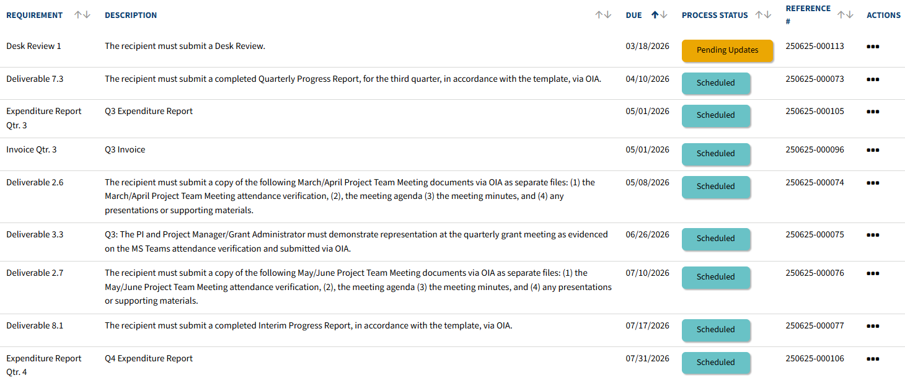
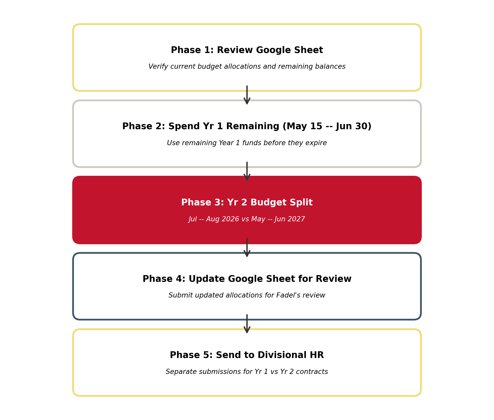
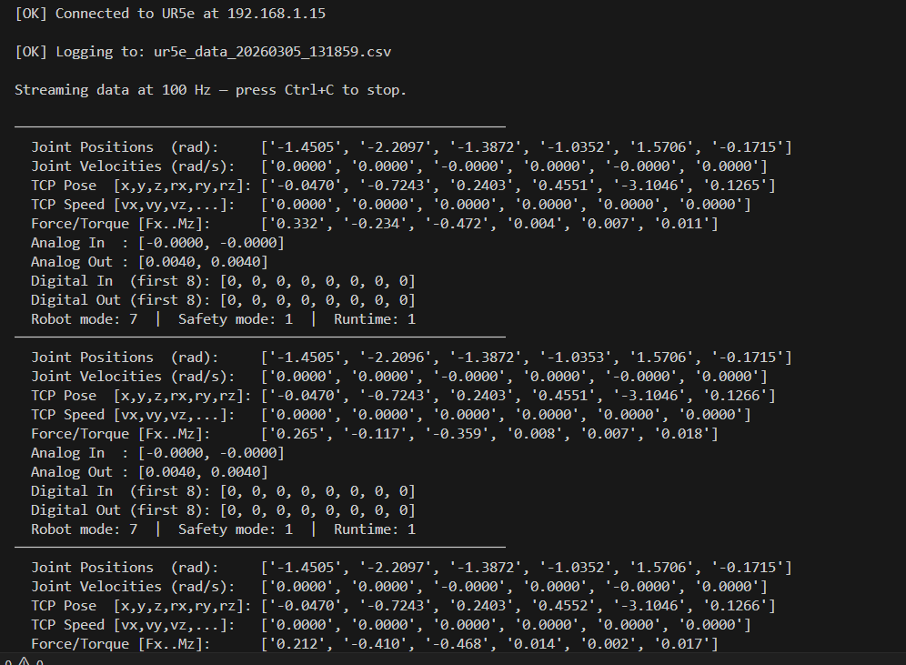
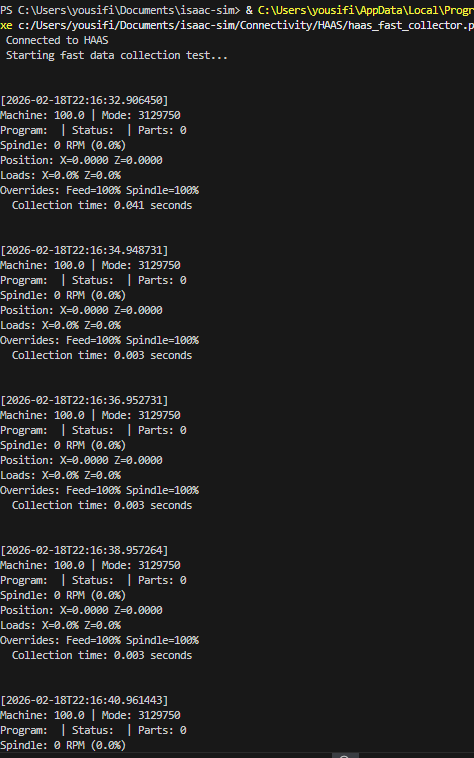
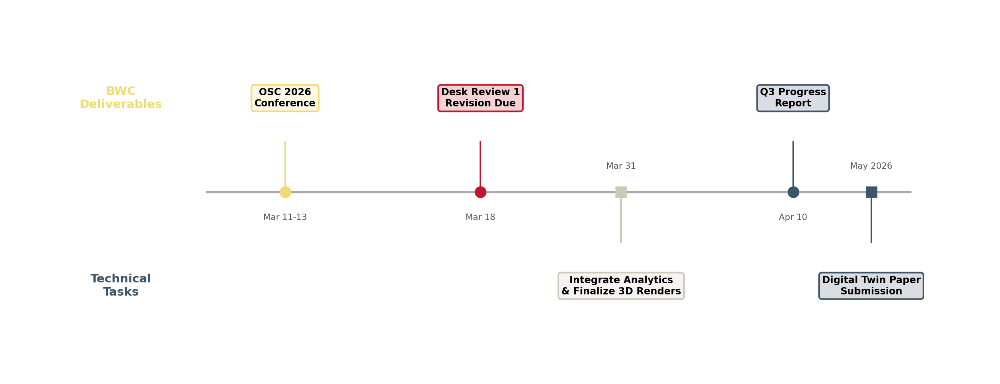

SIGHT: Safety Immersion and Gamified Hazard Training for Industry 5.0
Meeting 16: OSC 2026 Planning, Industry Updates, and BWC Deliverables
March 06, 2026
Meeting Goals
Review and approve Meeting 15 minutes and action items
Administrative updates: BWC Q3 meeting feedback and desk review revision deadline.
Technical updates:
- Planning and discussion for our OSC 2026 poster session, cobot demo, and digital twin experience.
- Sensing and digital twinning progress for the UR5 cobot and HAAS CNC lathe.
Industry Partner Collaboration: Q3 Updates from MeetKai and MaxByte
Risk mitigation/log and further updates.
Review Action Items from Previous Meeting and Approve Minutes
Fadel M. Megahed
Review of Action Items and Approval of Meeting Minutes
Action Item Tracking from Meeting 15
| Responsible Party | Action Item | Due Date | Status |
|---|---|---|---|
| Fadel/Mo | Present Q3 progress to the BWC | Feb 26, 2026 | |
| Fadel/Mo | Submit the meeting attendance sheet to BWC | Feb 27, 2026 | |
| Fadel/Mo | Submit revised Desk Review 1 | Mar 18, 2026 | |
| MeetKai | Complete Gamified Engine development | Feb 28, 2026 | |
| MeetKai | Integrate the analytics framework with VR modules | Mar 31, 2026 | |
| MeetKai | Finalize 3D equipment renders (with MU) | Mar 31, 2026 | |
| MaxByte | Finalize data acquisition from the three machines | Feb 27, 2026 | |
| MaxByte | Confirm IIoT sensor calibration for the pallet truck | Feb 27, 2026 | |
| MaxByte | Share raw sensor logs with MU for AI training | Mar 06, 2026 |
Attendance Sign as Required By BWC
Use your full name (first and last) when joining the Zoom call — even if you’re in a shared conference room.
This helps us log attendance accurately for BWC reporting.
If you’re in a conference room:
- Only one computer should have audio enabled.
- All other devices must be muted (microphone and speaker).
Administrative Updates and Requests
Fadel Megahed
Upcoming BWC Deadlines

A screenshot of the upcoming deliverables/requirements from the Ohio BWC/WSIC online portal.
Q3 BWC Presentation: Summary Slides
CITI Training Reminder
Summer Contracts: Budget Allocation Process

Figure 1: Summer contract budget allocation process for Year 1 remaining and Year 2 funds
Technical Updates and Plan for OSC Participation
Arthur Carvalho, Fadel Megahed, and Ibrahim Yousif
OSC 2026 Poster Submission
OSC 2026 Planning: Polling MU Team
OSC 2026 Planning: Polling Everyone
Sensing and Digital Twinning Progress
UR5 Cobot

HAAS CNC Lathe

Industry Partner Collaboration
MeetKai and MaxByte
MeetKai: Live Update
MeetKai will now share their screen for a Q3 update.
Please hold for screen sharing.
MaxByte: Live Update
MaxByte will now share their screen for a Q3 update.
Please hold for screen sharing.
Discussion and Wrap Up
Open Floor
Key Deliverables and Deadlines

Figure 2: Upcoming BWC deliverables and technical task deadlines
Updates to Risk and Risk Log
Based on our conversation, Arthur can update the risk log with any further updates.

Project funded by the Ohio BWC through their Worker Safety Innovation Center